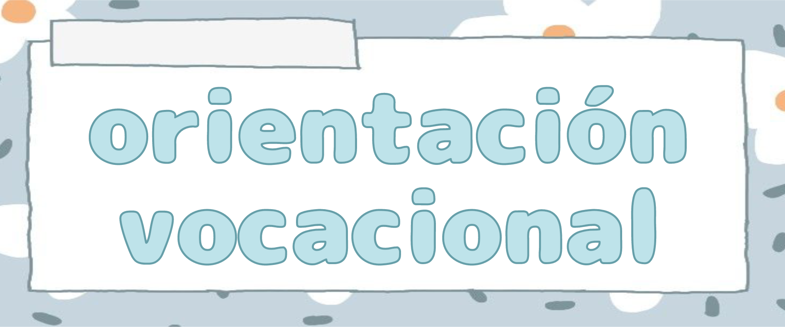

La orientación vocacional es un proceso cuyo propósito es ayudar a las personas, independientemente de su edad, en la elección o reelección de una carrera profesional. Su finalidad es proveer los elementos necesarios para garantizar una mejor elección individual, asegurando que cada persona se desenvuelva mejor en su profesión. Este proceso toma en cuenta esencialmente las habilidades, la inteligencia, las aptitudes, los intereses, la preparación y los valores que constituyen la personalidad de cada individuo. Se recomienda realizar este proceso de manera anticipada, especialmente en estudiantes, para que obtengan un mejor resultado en su toma de decisiones acerca de la profesión que elijan.
・┆✦ʚ Enfoques ɞ✦ ┆・
La orientación vocacional incorpora tres enfoques:
୭ Psicológico: considerar principalmente el bienestar personal.
୭ Educativo: tener en cuenta el sistema educativo del país, la educación debe transformarse de acuerdo a las necesidades de la sociedad.
୭ Socioeconómico: debe lograr que las personas colaboren para el progreso, el desarrollo social y económico del país.
En las últimas décadas han surgido enfoques integrales como el de resiliencia caracterizado por una mirada clínica, preventiva y operativa, así como un abordaje personalizado, que, lejos de hacer hincapié en los test estandarizados, toma a cada orientado como único.